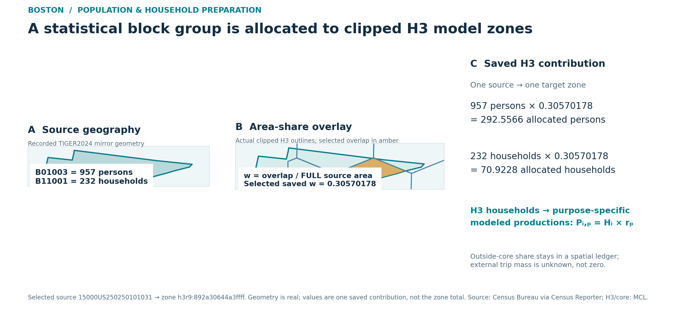

Boston population and household preparation
This is an upstream preparation step for the saved Boston four-stage example, not a fifth model stage. Its source statistics, model zones, transferred trip rates and activity-attraction proxy are distinct objects. The figures below are area-weighted estimates for the fixed union of 177 clipped H3 r9 zones—not the City of Boston, the road buffer, or all three source counties. No household microdata, synthetic persons or observed external-trip matrix was produced.

Editable SVG · Displayed geometry cutout · Figure provenance · Rendering source. On narrow screens, scroll the figure horizontally. The figure selects the lexicographically first Suffolk GEOID in the released source-statistics table, not the largest allocation or effect. Its geometry is from the recorded Census Reporter TIGER2024 mirror file and the released clipped-zone WKT. Its numbers are one saved source-to-zone contribution, not that H3 zone's total. The cutout is a display subset, not a substitute for all raw county geometry.
{kind=link}
Inputs, identities and saved transformation
| Role | Recorded input and version | Important distinction |
|---|---|---|
| Population and households | U.S. Census Bureau ACS 2024 five-year detailed tables, reference period 2020–2024, accessed through Census Reporter acs2024_5yr for block groups in Massachusetts Suffolk 025, Middlesex 017, Norfolk 021 (state 25) |
B01003 total persons and B11001 total households; households are not family-household subtotal or dwelling units. |
| Statistical boundaries | Census Reporter tiger2024 block-group GeoJSON, joined by source_geoid |
Not an H3 population raster or an original direct TIGER shapefile download. |
| Target geography | 177 clipped H3 r9 zones, nine-parent hierarchy, and reversible GMNS IDs/access | The core is the union of the stored mcl_clipped_geometry_wkt values. Source block-group IDs and H3 IDs remain separate. |
| Production parameters | CTPS TDM23.2.0 Structures and Performance, March 2025, Table 74, printed p. 148, hh_mean |
Transferred regional effective mean rates, not local calibration or the full TDM23 package. |
| Attraction weights | MassGIS Property Tax Parcels, separately recorded assessment slice | Nonresidential/mixed building-area proxy, not measured employment and not a household disaggregation weight. The earlier residential-area/50,000-trip scenario is separate. |
The recorded code transforms source and target polygons to EPSG:32619 before taking areas. For source block group g and clipped H3 zone i:
w_gi = area(G_g ∩ H_i_clipped) / area(G_g); N_i = Σ_g N_g w_gi; H_i = Σ_g H_g w_gi.
The denominator is the full source polygon, not its in-core portion. This is uniform-within-source-area allocation; it is not address-, building-, land-only- or population-density-weighted. The remainder outside the core stays in the spatial ledger. The ledger's external_person_trips is blank and external_trip_status is UNKNOWN_NOT_ZERO_NO_REGIONAL_OD_INPUT: external travel is unknown, not zero. A no-data zone must not be interpreted as a known zero; all 177 saved zones happen to have source coverage.
| Saved result | Quantity and unit | Open file |
|---|---|---|
| Source block groups intersecting the core | 174 block groups | ACS source statistics |
| Source-to-zone contributions | 724 overlap rows | Area-share crosswalk |
| Area-weighted core population | 171,049.52015979076 persons | H3 attributes |
| Area-weighted core households | 79,537.49255074753 households | H3 attributes |
| Six-purpose modeled daily productions | 816,054.6735706696 person trips | Generation rows |
The direct generation input is households, not the population total: P_i,p = H_i × r_p in modeled person trips per average weekday. The saved effective rates per household are HBW 1.90, HBSC 0.59, HBSR 2.19, HBPB 2.38, NHBW 0.51 and NHBNW 2.69. Their displayed six-rate sum is 10.26, while CTPS Table 74's separate all_trips hh_mean row displays 10.25. Both are reported as printed; the saved project used the six displayed purpose values. The population column is retained as a zonal attribute, not multiplied by these rates. No household income, worker count or vehicle-sufficiency distribution is inferred from these two totals.
The saved source table retains ACS margin-of-error fields. The H3 sums do not have a validated propagated MOE; do not read confidence bands into this allocation. Attractions were balanced separately by purpose from the MassGIS nonresidential/mixed building-area prior. No LODES WAC/RAC/OD values were acquired for this accepted branch.
Trace one actual contribution
In the released crosswalk, source 15000US250250101031 has 957 persons and 232 households. Its contribution to target h3r9:892a30644a3ffff has source_area_share = 0.30570178112615354, yielding allocated_population = 292.55660453772896 and allocated_households = 70.92281322126762. Other source rows may also contribute to that target, and the block group's other overlap rows and outside-core remainder remain separately accounted for.
The original build code used source IDs census_reporter_acs2024_5yr_bg_mirror, ctps_tdm23_2_0_structures_performance_202503 and massgis_property_tax_parcels_feature_service_20260917; the release-normalized rows use acs2024_5yr_bg_census_reporter_mirror, ctps_tdm23_2_0_report and massgis_property_assessment_20260917. This is an explicit alias map, not a rewrite of frozen source IDs.
Level A · Verify released arithmetic without a solver
From the repository root, using Python 3.12+ standard library only:
python -B tools/population/verify_saved_allocation.py `
--data-dir examples/boston/population_r1/data `
--generation examples/boston/behavior_feedback_r1_semantic_fix_r1/data/trip_generation_by_purpose.csv `
--ledger examples/boston/behavior_feedback_r1_semantic_fix_r1/data/external_flow_ledger.csv
The helper validates required fields and string GEOIDs, the selected row, source × stored full-area share, per-H3 aggregation, H_i × r_p, and the distinct outside-core status; it exits nonzero for inconsistent inputs. --help documents configurable paths and an optional output JSON. It verifies saved-table arithmetic, not fresh county acquisition, spatial intersections, source MOE propagation, IPF, mode choice or assignment. The companion immutable BOSTON_BEHAVIOR_FEEDBACK_PUBLIC_DATA_EN.zip (SHA-256 a3f33648c4dff3d3f462e4bbf4ebedb198665afd165688d0f481c88cded31d71) retains more of the original data chain; no live Release URL is asserted here.
Level B · Reacquire source inputs and rebuild upstream steps
Use the machine-readable source/asset registry for the six recorded county JSON/GeoJSON snapshot hashes, fields and URLs. The exact historical raw files are not in this source upload. The following are reconstructed request recipes, not recovered historical request logs; availability of current bodies has not been verified:
https://api.censusreporter.org/1.0/data/show/acs2024_5yr?table_ids=B01003%2CB11001&geo_ids=150%7C05000US25025
https://api.censusreporter.org/1.0/data/show/acs2024_5yr?table_ids=B01003%2CB11001&geo_ids=150%7C05000US25017
https://api.censusreporter.org/1.0/data/show/acs2024_5yr?table_ids=B01003%2CB11001&geo_ids=150%7C05000US25021
https://api.censusreporter.org/1.0/geo/show/tiger2024?geo_ids=150%7C05000US25025
https://api.censusreporter.org/1.0/geo/show/tiger2024?geo_ids=150%7C05000US25017
https://api.censusreporter.org/1.0/geo/show/tiger2024?geo_ids=150%7C05000US25021
The recorded builder expects these files as raw/demographics/acs2024_5yr_bg/{suffolk_025,middlesex_017,norfolk_021}.json and matching _tiger2024.geojson, plus database/zones/zone.csv with clipped_geometry_wkt, the saved MassGIS activity prior and road impedance inputs under a supplied --root. It filters intersecting block groups after reading all three counties, projects to EPSG:32619 and produces the published table types. With a complete compatible instance assembled independently, its actual entry point is:
python -B examples/boston/behavior_feedback_r1/pipeline/build_regional_demand.py --root "path/to/complete-instance" --run-dir "path/to/new-output"
Its main() continues into gravity/IPF and other demand steps; it is not a population-only command and was not run for this documentation update. A raw-source rebuild requires all those inputs, accepted code dependencies and source terms. The present public exchange includes clipped H3 geometry, but not all exact county raw JSON/GeoJSON or every private impedance input, so complete byte-identical upstream replay from this source tree alone is not claimed. Freshly acquired bytes should receive new hashes and be compared, not renamed to fake a historical snapshot.
The Census Reporter's estimate.B01003001 / error.B01003001 and estimate.B11001001 / error.B11001001 correspond to official Census B01003_001E/M and B11001_001E/M. The official ACS 2024 API, population field definition, household field definition and examples/key notice support an alternative acquisition route. An illustrative Suffolk request template is:
https://api.census.gov/data/2024/acs/acs5?get=NAME,B01003_001E,B01003_001M,B11001_001E,B11001_001M&for=block%20group:*&in=state:25&in=county:025&in=tract:*&key=YOUR_KEY_GOES_HERE
For Middlesex and Norfolk, replace county 025 with 017 and 021. The official response is a different JSON contract requiring field, state/county/tract/block group → 15000US... GEOID and geometry mapping before this builder can read it. The current examples page says data queries require an API key; use an environment variable or literal placeholder and never publish a real key. Similarly, the official TIGER2024 block-group directory and Massachusetts ZIP are alternative geometry sources, not demonstrated coordinate- or byte-identical replacements for the used mirror GeoJSON. Older mirror geometry availability is not guaranteed.
The CTPS TDM23.2.0 model page and user guide give context, not the full source/input package. The recorded MassGIS FeatureServer layer was accessed for a 2026-09-22 local slice with Boston FY2023, Cambridge FY2026 and retained null-FY rows. Selected fields included OBJECTID, GlobalID, LOC_ID, MAP_PAR_ID, POLY_TYPE, TOWN_ID, PROP_ID, FY, USE_CODE, CITY, YEAR_BUILT, BLD_AREA, UNITS, RES_AREA, STORIES, USE_DESC and Shape__Area; owner and address fields were not requested. Current service access does not establish the historical bytes. Original project parcel-source manifest and selected field dictionary document the retained privacy-minimized slice.
Boston case · Four-stage saved results · Road/GTFS/GPS/walk-bike source index · Data terms